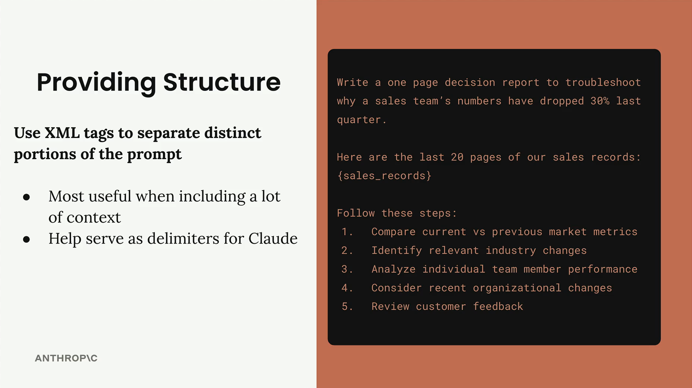
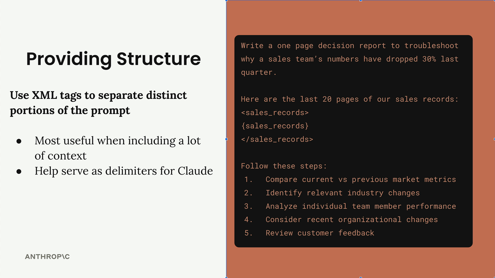
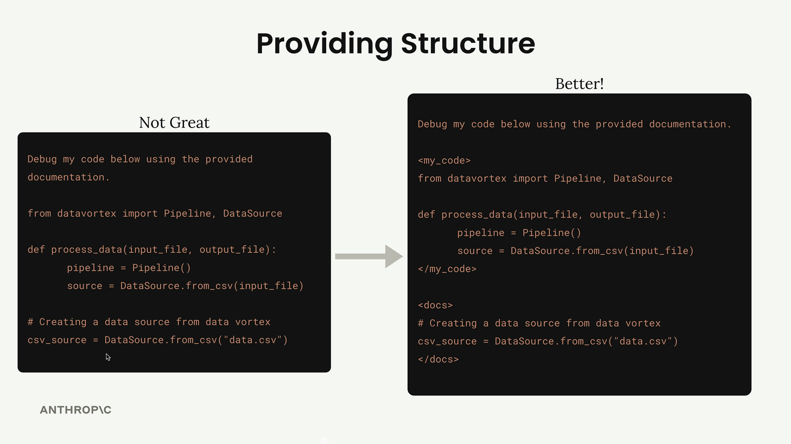

XML 태그로 구조화하기
많은 내용을 포함한 프롬프트를 작성할 때, Claude는 어떤 텍스트가 서로 연관되어 있는지 또는 각 섹션이 무엇을 나타내는지 파악하는 데 어려움을 겪을 수 있습니다. XML 태그는 프롬프트에 구조와 명확성을 추가하는 간단한 방법을 제공하며, 특히 대량의 데이터를 삽입할 때 유용합니다.
구조가 중요한 이유
20페이지 분량의 판매 기록을 분석해야 하는 프롬프트를 생각해보세요. 명확한 경계가 없으면 Claude는 여러분의 지시사항과 실제 분석하려는 데이터를 구분하는 데 어려움을 겪을 수 있습니다.

위의 예시는 불명확한 경계가 Claude의 의도 파악을 얼마나 어렵게 만드는지 보여줍니다. 판매 기록을 <sales_records> 및 </sales_records> 와 같은 XML 태그로 감싸면 Claude가 프롬프트의 구조를 이해하는 데 도움이 되는 명확한 구분자를 만들 수 있습니다.

실용적인 예시: 코드와 문서
XML 태그가 중요한 이유를 보여주는 더 극적인 예시입니다. 제공된 문서를 사용하여 코드를 디버그해 달라고 Claude에게 요청할 때, 모든 것을 혼합하면 혼란이 발생합니다:

"좋지 않은" 버전은 코드와 문서를 거의 구분할 수 없게 만듭니다. "더 나은" 버전은 <my_code> 및 <docs> 태그를 사용하여 명확한 경계를 만듭니다.
사용자 정의 태그 이름
공식 XML 태그를 사용할 필요는 없습니다. 콘텐츠에 맞는 설명적인 이름을 만드세요:
-
<sales_records>는<data>보다 낫습니다 -
<athlete_information>은 사용자 세부 정보를 명확히 식별합니다 -
<my_code>와<docs>는 서로 다른 유형의 콘텐츠를 분리합니다
태그 이름이 구체적이고 설명적일수록 Claude가 각 섹션의 목적을 더 잘 이해할 수 있습니다.
XML 태그를 사용할 때
XML 태그는 다음과 같은 경우에 가장 유용합니다:
- 대량의 컨텍스트나 데이터를 포함할 때
- 다양한 유형의 콘텐츠(코드, 문서, 데이터)를 혼합할 때
- 콘텐츠 경계를 명확히 하고 싶을 때
- 여러 변수를 삽입하는 복잡한 프롬프트를 다룰 때
짧은 콘텐츠의 경우에도 XML 태그는 Claude에게 프롬프트 구조를 더 명확하게 보여주는 구분자 역할을 할 수 있습니다.
실제 적용 사례
실제로 다음과 같이 프롬프트를 구성할 수 있습니다:
<athlete_information>
- Height: 6'2"
- Weight: 180 lbs
- Goal: Build muscle
- Dietary restrictions: Vegetarian
</athlete_information>
Generate a meal plan based on the athlete information above.이렇게 하면 키, 체중, 목표, 식이 제한이 모두 식단 계획을 생성할 때 함께 고려해야 할 관련 운동선수 데이터임이 명확해집니다.
단순한 프롬프트에서는 극적인 개선을 보지 못할 수도 있지만, 프롬프트가 더 복잡해지고 다양한 콘텐츠가 많아질수록 XML 태그의 가치는 점점 더 커집니다.